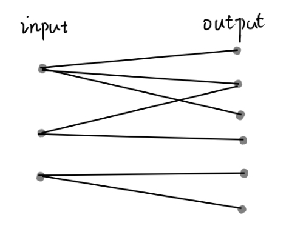
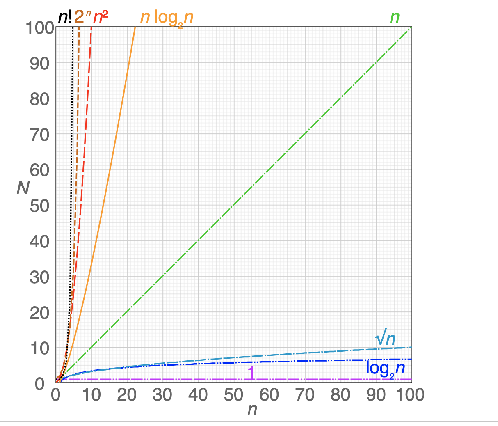
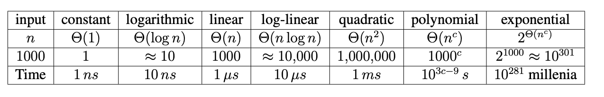
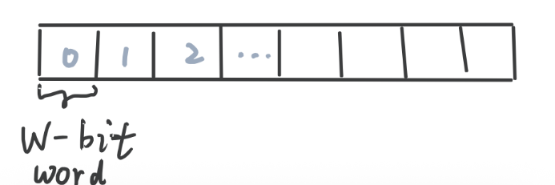

Introduction¶
Course source: 6.006 Lecture 01
Goal¶
solve computation problems, and communicate that our solutions are correct and efficient.
| Term | Definition | Requirements | Example |
|---|---|---|---|
| Define a Problem | A mapping (binary relation) from problem inputs to correct outputs. | - Usually don’t specify every correct output for all inputs (too many examples; one input could map to many output) - Provide a verifiable predicate (a property) that correct outputs must satisfy (so we can check whether the output is correct or not given a input-output pair) - general problem for arbitrarily large input size |
- Not general: small input instance: In this room, is there a pair of students with same birthday? - General: arbitrarily large inputs: Given any set of n students, is there a pair of students with same birthday? (include year, date, hour, etc.) |
| Design Algorithms | a sequence of procedure that computers will follow to solve a problem, i.e., to map each input to a single correct output | - should be deterministic function, i.e., no randomness - should be correct for any arbitrary valid input. |
to solve birthday matching: – Maintain a record of names and birthdays (initially empty) – Interview each student in some order - If birthday exists in record, return found pair. Else add name and birthday to record – Return None if last student interviewed without success |
| Prove Correctness | - For small inputs: can use case analysis - For arbitrarily large inputs, algorithm must use induction (recursion is such a key concept) |
Proof of correctness of birthday matching algorithm: - Induct on \(n\): the number of students in record – Hypothesis: if first \(n\) contain match, returns match before interviewing student \(n + 1\) – Base case: \(n = 0,\) first \(0\) contains no match – Inductive steps: Assume for induction hypothesis holds for \(k\), and consider \(k + 1\). Two cases: 1. If first \(k\) contains a match, already returned a match by induction. 2. Else first \(k\) do not have match, so if first \(k+1\) has match, match contains the \(k+1\) student – Then algorithm checks directly whether birthday of student \(k+1\) exists in first \(k\) |
|
| Communicate Efficiency | Measure the number of operations instead of time, so that the performance of algorithms depend on the the size of input instead of underlying machine. | Asymptotic Notation: ignore constant factors and low order terms – upper bounds \(O\) (worst case ) - lower bounds \(\Omega\) (best case) - tight bounds (both upper and lower, more presice) \(\Theta\) (average case) Efficient if returns in polynomial time with respect to input (not exponential) |
Figure: Problem definition: mapping (binary relation, a bipartite graph) from problem inputs to correct outputs.

Use Big O Notation to Describe the Computational Complexity¶
| Aspects | Details |
|---|---|
| Question | Under the worst case, how does runtime or memory allocation scale (upper bound), as the input size grows? |
| Complexity | Complexity is described by a math function |
| Define Variables | Variables should represent values that change between different inputs and would affect the algorithm. - If there is one input dimention, we coould define the length of an input as \(n\) - If there are multiple inputs, we could define each input size seperately as \(n, m\) or \(n = \text{length1}+ \text{length2}\) |
| Rules | Only represent when the input variables tend to infinity (sufficiently large), ignore constants and lower order terms. |
| Note | When n is not sufficiently large, an \(O(n)\) algorithm can be slower than an \(O(n\log n)\) algorithm. |
Figure: Complexity: \(O(1)<O(\log n)<O(n^{1/2})<O(n)<O(n \log n)<O(n^2)<O(2^n)<O(n!)\)

Table: Complexity

Time Complexity vs Space Complexity¶
| Aspects | time complexity | space complexity |
|---|---|---|
| Difference | the amount of run time (the number of basic operations) the algorithm needs to run relative to the input size | the amount of allocated memory used by the algorithm relative to the input size |
| trade-off | which is more important depends on the specific problem. Typically, people care about the time complexity more than the space complexity. | |
| Note | - ❌ never count the space used by the input (it is bad practice to operate directly on input and/or modify the input) ‼️Always ask interviewer if allowed - ❌ usually don't count the space used by the output (the answer) unless an interviewer asks us to. |
Model of Computation : Word-RAM¶
RAM (Random Access Memory)
| Aspects | Definition | Details |
|---|---|---|
| Why do we need it | Basis for computing efficiency: specification for what operations on the machine can be performed in constant \(O(1)\) time. | CPU supports constant-time operations on an \(O(1)\) number of words (integers): – integer arithmetic: +, -, *, //, %– logical operators: &&, \|\|, !, ==, <, >, <=, >=– bitwise arithmetic: &, \|, <<, >>– Given word \(a\), can read / write at address \(a\). |
| Computation model | CPU addresses a consecutive chunk of memory (\(w\)-bit RAM cell) in constant time. The chunk size is called the word size, denoted by \(w\). A \(w\)-bit word can address \(n = 2^w\) addresses in memory. | To address the largest memory address, require at least \(w \geq \log_2 n\) bits. To address more memory for arbitrarily large input, we need to increase the RAM size. |
Figure: Word-RAM: Memory is an array of \(w\)-bit words. Each word is a \(w\)-bit long cell/chunk in the memory and we can access them randomly.

How to Solve an Algorithms Problem¶
| Methods | Details |
|---|---|
| Reduce to a problem you already know (use data structure or algorithm) |
• Search Problem (Data Structures) • Sort Algorithms • Shortest Path Algorithms |
| Design your own (recursive) algorithm | • Brute Force • Decrease and Conquer • Divide and Conquer • Dynamic Programming (L15-L19) • Greedy / Incremental |